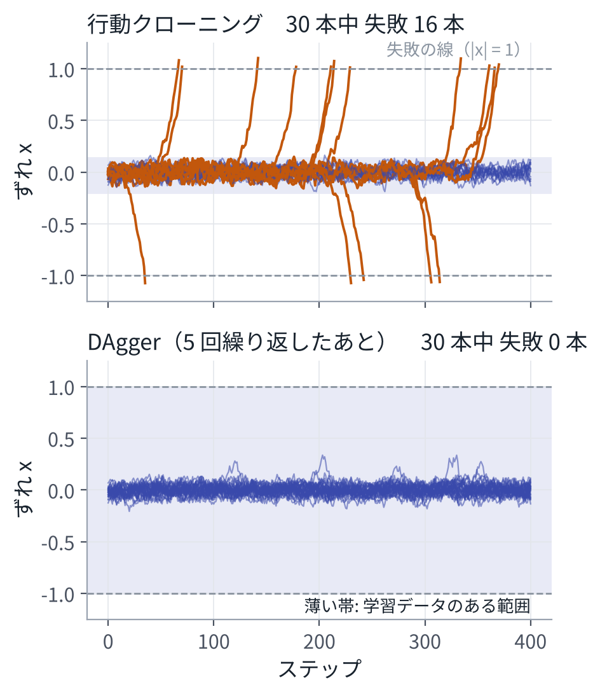

目次
1方策と、お手本のデータ
ロボットは、観測 \(o_t\)（カメラ画像、関節の角度など）を受け取り、行動 \(a_t\)（関節の目標など）を出す。行動の結果、次の観測 \(o_{t+1}\) が決まる。観測から行動を決める関数を方策という。2 章にならって、分布として書く。
\[ a_t \sim \pi_\theta(\,\cdot \mid o_t) \]MPC も方策の一種である。観測から、最適化を解いて行動を出している。模倣学習では、この方策をデータから作る。データは、人がロボットを遠隔で操作して課題をこなしたときの、観測と行動の記録である。
\[ \mathcal D = \big\{(o^{(k)}_0, a^{(k)}_0, o^{(k)}_1, a^{(k)}_1, \dots)\big\}_{k=1}^{K} \]2行動クローニング
記録の中の (観測, 行動) の組を、ばらばらの教師ありデータとして扱い、2 章の最尤推定で方策を学習する。これを行動クローニング（behavior cloning）という。
\[ \min_\theta\ \mathbb E_{(o, a)\sim\mathcal D}\big[-\log \pi_\theta(a \mid o)\big] \]方策の出力を正規分布とすれば二乗誤差、ラプラス分布とすれば L1 誤差の回帰になる。どちらも 1 章の手順で学習できる。簡単で、うまくいくことも多い。しかし、2 つの弱点がある。
3弱点 1：誤差の積み重なり
学習に使った観測は、お手本が訪れたものだけである。方策が少し誤ると、ロボットはお手本が通らなかった状態に入る。そこでの正しい行動は教わっていないので、さらに誤り、さらに外れる。誤差が雪だるま式に増える。
Ross と Bagnell は、お手本の状態の上で 1 ステップあたり確率 \(\epsilon\) で誤る方策について、長さ \(T\) の課題でのお手本との差が、最悪の場合、次の大きさになることを示した[1]。
\[ O\big(\epsilon\, T^2\big) \]入力がデータと同じ分布から来る普通の教師あり学習なら、誤差は \(O(\epsilon T)\) で済む。\(T^2\) になるのは、時刻 \(t\) での 1 回の誤りが、残りの \(T - t\) ステップ全部を台なしにしうるからである。足し合わせると \(\sum_t \epsilon (T - t) \approx \epsilon T^2 / 2\) になる。
DAgger：自分が訪れた状態で教わり直す
DAgger は、学習した方策を実際に走らせ、方策が訪れた状態に「お手本ならどうするか」を付けてデータに足し、学習し直す。これを繰り返す[2]。
- お手本のデータで方策を学習する。
- その方策でロボットを動かし、訪れた観測を記録する。
- 記録した観測に、お手本の行動を付ける（人が「ここではこうする」と教える）。
- データに足して学習し直し、2 に戻る。
こうすると、方策が実際に訪れる状態の上で学習することになり、誤差は \(O(\epsilon T)\) に戻る。代わりに、任意の状態で「正しい行動」を答えられる教え手が要る。人が答えるのは手間がかかる。シミュレータの中なら、真の状態を知っている制御器を教え手にできる。これが 13 章の方策の蒸留である。
演習 9 では、放っておくとずれが広がる 1 次元の系で、これを確かめる。方策は、状態を細かい区間に分け、区間ごとにお手本の行動の平均を覚える「表」とし、見たことのない区間では何もしない、とする。

| \(T\) | 行動クローニング 失敗、コスト÷\(T\) | DAgger 失敗 |
|---|---|---|
| 50 | 4.4%、0.014 | 0.0% |
| 100 | 11.9%、0.048 | 0.0% |
| 200 | 23.2%、0.106 | 0.0% |
| 400 | 42.2%、0.221 | 0.1% |
| 800 | 68.5%、0.398 | 0.0% |
\(T\) は課題の長さ。各 2000 本。コストは、失敗してから課題の終わりまでのステップ数の平均。お手本は、どの長さでも失敗 0%。
行動クローニングのコストを \(T\) で割った値は、\(T\) が 2 倍になるとほぼ 2 倍になる（\(T\) が大きくなると頭打ちになる）。コストが \(T^2\) に比例して増えている、ということである。DAgger は、5 回の繰り返しで、どの長さでもほぼ失敗しなくなった。
4弱点 2：正解が複数ある
ロボットの正面に障害物があり、お手本の半分は左へ、半分は右へ避けているとする。二乗誤差の回帰は、2 章で見たとおり、条件付きの平均を出す。左と右の平均は「正面」で、お手本に 1 つもない「ぶつかる行動」である。
人のお手本には、こうした「やり方の違い」がよく混ざる。どちらの手でつかむか、どちらから回り込むか。山が 1 つの分布（正規分布）では、これを表せない。山が複数ある分布を表して取り出す方法が、10 章の拡散とフローである。
5行動のまとまり（action chunking）
1 回の推論で、次の 1 ステップだけでなく、先の \(H\) ステップ分の行動をまとめて出す。
\[ A_t = (a_t, a_{t+1}, \dots, a_{t+H-1}) \sim \pi_\theta(\,\cdot \mid o_t) \]方策が判断する回数が \(T\) 回から約 \(T/H\) 回に減り、誤差の積み重なりが減る。まとめて出すので、動きもなめらかになる。代わりに、まとまりを実行している間は、新しい観測に反応しない。この取り引きは 12 章で扱う。MPC の後退ホライズン（先まで計画して、先頭だけ使う）とよく似た形である。
ACT
ACT（Action Chunking with Transformers）は、Transformer で行動のまとまりを出す方策である[3]。損失は、L1 の誤差と、潜在変数についての KL の和である。
\[ \begin{aligned} L ={}& \big\|A - \hat A\big\|_1 \\ &+ \beta\ \mathrm{KL}\big(q_\phi(z \mid A, o)\ \big\|\ \mathcal N(0, I)\big) \end{aligned} \]潜在変数 \(z\) は、お手本ごとの「やり方の違い」を受け持つ（条件付き変分オートエンコーダ）。学習では、お手本の行動 \(A\) を見て \(z\) を作り、推論では \(z = 0\)（分布の中心）を使う。弱点 2 への、1 つの対策である。LeRobot の既定値は、\(H = 100\)、\(\beta = 10\) である[4]。
毎ステップ推論すると、同じ時刻について、過去のいくつかのまとまりからの予測が重なる。ACT は、これを重み \(w_i = \exp(-m\, i)\) で平均する（temporal ensembling）。\(i\) は予測の古さで、\(m\) は古い予測をどれだけ軽く扱うかを決める。
ACT は重みが約 8000 万個で、LeRobot の文書には、GPU 1 枚で数時間で学習できるとある[4]。言葉の指示を使わない、1 つの課題のための方策を作るなら、最初に試す候補になる。
6演習
演習 9行動クローニングと DAgger
1 秒ほどで終わる。
python3 vla_math/ch09_imitation.py出力の一部：
(1) 行動クローニング: お手本の記録（100 ステップ × 5 本）から表を作る
お手本が訪れた範囲: -0.20 〜 +0.14（この外では、方策は何もしない）
(2) DAgger: 方策で走らせ、訪れた状態にお手本の行動を付けて足す
1 回目: 走らせた 5 本のうち失敗 0 本、データのある範囲 -0.20 〜 +0.14
2 回目: 走らせた 5 本のうち失敗 1 本、データのある範囲 -0.20 〜 +1.00
5 回目: 走らせた 5 本のうち失敗 1 本、データのある範囲 -1.00 〜 +1.00
見るところ：DAgger は、失敗しかけた走りの記録こそが役に立つ。外れた状態にお手本の行動が付き、次からはそこから戻れるようになる。
変えてみる：お手本の本数を 50 本に増やすと、行動クローニングの失敗はどう変わるか。それでも \(T\) を大きくすると失敗が増えるのはなぜか。
7まとめ
- 行動クローニングは、観測から行動への教師あり学習である。損失は 2 章の負の対数尤度。
- 弱点 1：自分の誤りで、教わっていない状態に入る。誤差は課題の長さの 2 乗で効く。DAgger は、方策が訪れた状態で教わり直して、これを防ぐ。
- 弱点 2：正解が複数あると、回帰は平均を出す。10 章の拡散とフローで解く。
- 行動のまとまりは、判断の回数を減らし、動きをなめらかにする。ACT が代表である。
8確かめる問題
- 行動クローニングの誤差が \(T^2\) で効く理由を、「1 回の誤りが残りのステップを台なしにする」ことから説明せよ。
- DAgger で、お手本の行動を付ける観測を、お手本ではなく学習した方策で集めるのはなぜか。
- 左右に避けるお手本を、二乗誤差の回帰で学習すると何が起こるか。
- 行動のまとまりを長くすると、よくなることと、悪くなることを 1 つずつ挙げよ。
9読むもの
※参考文献
- S. Ross and D. Bagnell, "Efficient Reductions for Imitation Learning," AISTATS 2010, PMLR 9:661–668. https://proceedings.mlr.press/v9/ross10a.html
- S. Ross, G. J. Gordon and J. A. Bagnell, "A Reduction of Imitation Learning and Structured Prediction to No-Regret Online Learning," 2011. arXiv:1011.0686
- T. Z. Zhao, V. Kumar, S. Levine and C. Finn, "Learning Fine-Grained Bimanual Manipulation with Low-Cost Hardware," 2023. arXiv:2304.13705
- Hugging Face, "LeRobot," GitHub リポジトリ. 2026-11-13 の版（コミット fe1c545）を参照した。https://github.com/huggingface/lerobot。文書：https://huggingface.co/docs/lerobot
- F. Capuano et al., "Robot Learning: A Tutorial," 2025. arXiv:2510.12403